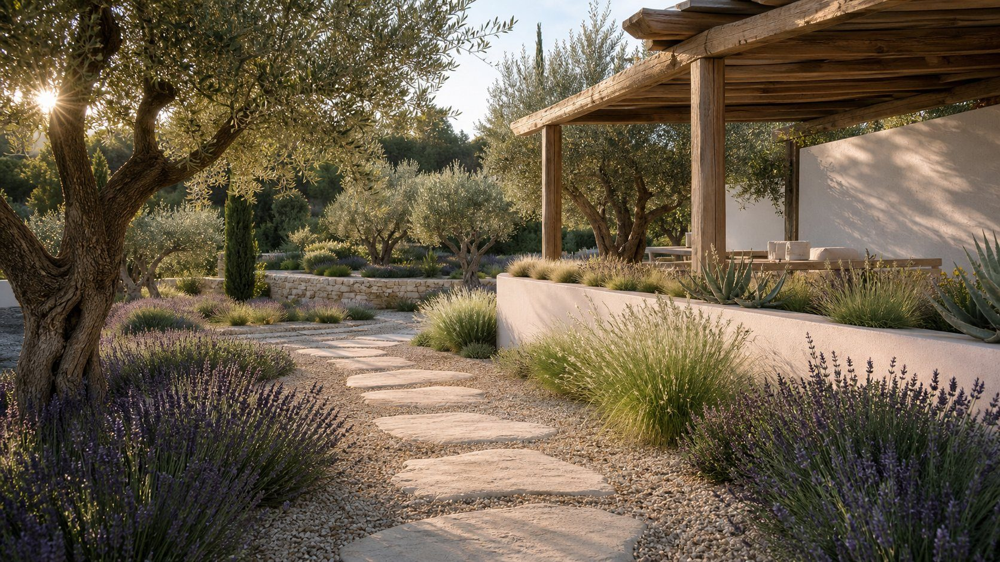

Création & aménagement
Conception de jardins, allées, pelouses, massifs et terrasses plantées.

Nos savoir-faire
06 06
Entretien et décoration des jardins et espaces verts.
Notre approche
Nous créons, plantons et entretenons vos jardins, des massifs et allées à l'arrosage, la taille et la décoration.
Le service s'adapte à la taille de l'espace et au niveau d'entretien souhaité, en veillant à l'harmonie des plantations et des finitions paysagères.
Dans le détail
Décrivez-nous votre besoin. Nous vous répondons avec une première étude et un devis personnalisé.
Conception de jardins, allées, pelouses, massifs et terrasses plantées.
Choix des essences, plantation, paillage et gestion de l'arrosage.
Entretien régulier des pelouses, haies, arbustes et élagage raisonné.
Votre projet commence ici
Décrivez-nous votre besoin. Nous vous répondons avec une première étude et un devis personnalisé.
Demander un devis gratuit